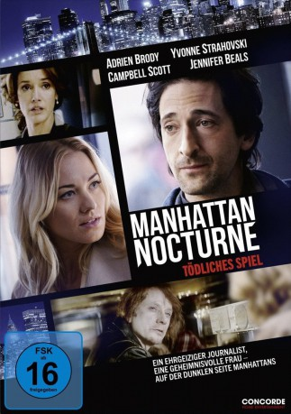

gesehen am 31.12.2016
gesehen am 31.12.2016Alternativ: Manhattan Night (Englischer Titel) gesehen am 31.12.2016
 
 IMDB-Wertung: 6.2 / 10
IMDB-Wertung: 6.2 / 10  Metascore:
Metascore: 
Based on Colin Harrison's acclaimed novel Manhattan Nocturne (a New York Times Notable Book of the Year), MANHATTAN NIGHT tells the story of Porter Wren (Adrien Brody), a New York City tabloid writer with an appetite for scandal. On the beat he sells murder, tragedy and anything that passes for the truth. At home he is a model family man, devoted to his loving wife (Jennifer Beals). But when a seductive stranger (Yvonne Strahovski) asks him to dig into the unsolved murder of her filmmaker husband Simon (Campbell Scott), he can't resist. In this modern version of a classic film noir, we follow Porter as he is drawn into a very nasty case of sexual obsession and blackmail - one that threatens his job, his marriage, and his life. MANHATTAN NIGHT will be released by Lionsgate Premiere in theaters and On Demand May 20, 2016. Lionsgate Premiere, Grindstone Entertainment Group and 13 Films present in association with Sparkle Roll Media Corporation and Big Indie Pictures a production of Fable...
Jahr: 2016
Dauer: 114 Minuten
FSK:
Land: USA Studio: Lionsgate PremiereTonspuren: DD5.1 - ,
Untertitel: Deutsch,
Auflösung: 1080p (1920x808) Größe: 9256 MB
Genre: Thriller, Drama, Krimi, Mystery
Regisseur: Brian DeCubellis
Drehbuch: Stuart Gordon
Soundtrack:
Darsteller:
 Adrien Brody als Porter Wren
Adrien Brody als Porter Wren Yvonne Strahovski als Caroline Crowley
Yvonne Strahovski als Caroline Crowley Campbell Scott als Simon Crowley
Campbell Scott als Simon Crowley Jennifer Beals als Lisa Wren
Jennifer Beals als Lisa Wren Will Beinbrink als Billy
Will Beinbrink als Billy Steven Berkoff als Hobbs
Steven Berkoff als Hobbs Kevin Breznahan als Ron
Kevin Breznahan als Ron Frank Deal als Campbell
Frank Deal als Campbell Maria-Christina Oliveras als Prostitute
Maria-Christina Oliveras als Prostitute Amelie McKendry als Not Caroline , uncredited
Amelie McKendry als Not Caroline , uncredited Uzimann als Cab Driver , uncredited
Uzimann als Cab Driver , uncreditedDatei: X:\2016(G-M)\Manhattan Nocturne - Tödliches Spiel (2016, FSK, 1920x808).mkv seit 21.10.2016
Festplatte: HD 2016(A-Z)
 Es gibt insgesamt 164 Filme in der Gruppe '2016(G-M)'
Es gibt insgesamt 164 Filme in der Gruppe '2016(G-M)'